01
歷史高位
股價接近或創出歷史新高，顯示強勢動能。重覆觸碰同一高位（EQH）次數越多，阻力越明確，突破後確定性更強。
✓ 價格創新高或多次測試前高
Breakout Trading · 突破交易
突破交易需同時滿足四大條件：歷史高位、斐波 0.236 以上、成交量萎縮、收窄三角形。 四者齊備，才具備高勝率的突破進場機會。歷史高位若重覆觸碰（EQH），確定性更強。
以下四個條件必須同時成立，才視為有效的突破交易信號。缺一不可。
股價接近或創出歷史新高，顯示強勢動能。重覆觸碰同一高位（EQH）次數越多，阻力越明確，突破後確定性更強。
股價維持在斐波那契 0.236 回撤水平之上，代表趨勢強勁、回調淺薄。若跌破 0.236，則突破信號失效。
突破前的整理階段，成交量逐步萎縮（量縮）。量縮代表籌碼穩定、浮碼減少，為即將到來的放量突破蓄勢。
價格在上升過程中形成收窄三角形（Converging Triangle），高低點逐漸收斂。突破三角形上軌時，為最佳進場點。
LuxAlgo SMC 指標標記的市場結構，是突破交易最重要的判斷框架。
上升趨勢中，價格突破前一個波段高點，確認趨勢延續。每個 BOS 都是潛在的加倉或進場信號。
價格首次跌破前一個波段低點（或突破前低），暗示趨勢可能反轉，應減倉或平倉。
流動性聚集區域。價格重覆觸碰同一高位（EQH）時，突破確定性更強；掃蕩後才發動真正突破。
Strong High（強阻力）與 Weak Low（弱支撐）標記關鍵突破目標與止損位置。
突破後的回調買點，常用斐波那契水平作為進場參考。
延伸目標：1.618、2.618、3.618 — 用於設定突破後的獲利目標（如 MSFT、HSBC 長線走勢）。
以下 13 個真實 TradingView 圖表案例，展示符合四大條件的突破交易模式。

2024 年強勢多頭，從 6 港元突破至 24 港元，連續 BOS 確認上升結構。斐波那契 0.618（16.96）為關鍵回撤支撐。

2016–2024 長線牛市典範。2020 年 3 月低點（134.23）為斐波那契起點，延伸目標 1.618–3.618 指引長期漲幅。

2003–2007 多年上升趨勢，密集 BOS 標記每個結構高點被突破的時刻，展現趨勢追蹤的經典玩法。

2005 年從 1,200 日元急漲至 2,400，突破 0 斐波水平（1,758）後加速，EQH 標記流動性掃蕩。

2013 年從 28 美元飆升至 97 美元，展示突破的雙面性——暴漲後 CHoCH 預警趨勢反轉，回撤至 0.786（40.20）。

1999 年 3 月從長期盤整區突破，成交量暴增確認信號。教科書級別的「盤整突破」案例。

2020–2022 穩健上升，斐波那契 0.618（207.81）為趨勢中最重要的回撤買點。

2020 年 9 月低點（27.92）啟動長線復甦，Strong Low 與 Weak High 標記供需區，延伸目標清晰。

Strong High（3,100）形成主要阻力，突破失敗後回落至 Weak Low 區域，展示假突破風險。

2015 年拋物線式突破，從 15 港元飆升至 28 港元，2017 年 CHoCH 標記趨勢終結與急跌。

2017–2019 穩定 BOS 上升，2020 年 CHoCH 確認熊市結構，斐波 0.618（10.67）為關鍵支撐。

2016–2018 從 130 美元漲至 360 美元，EQL 雙底後突破，連續 BOS 確認超級牛市結構。
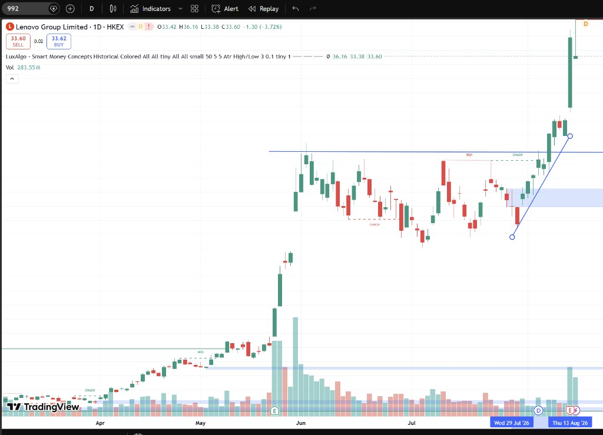
6–7 月於 36.16 前高水平盤整，7 月底放量突破阻力線，BOS 確認突破，需求區 34–35 提供回測支撐。
Advanced · 進階篇
掌握四大條件與經典案例後，進一步觀察歷史高位的重覆觸碰。 當股價多次觸碰同一水平形成 EQH（Equal Highs），阻力越明確；放量突破後，確定性更強。
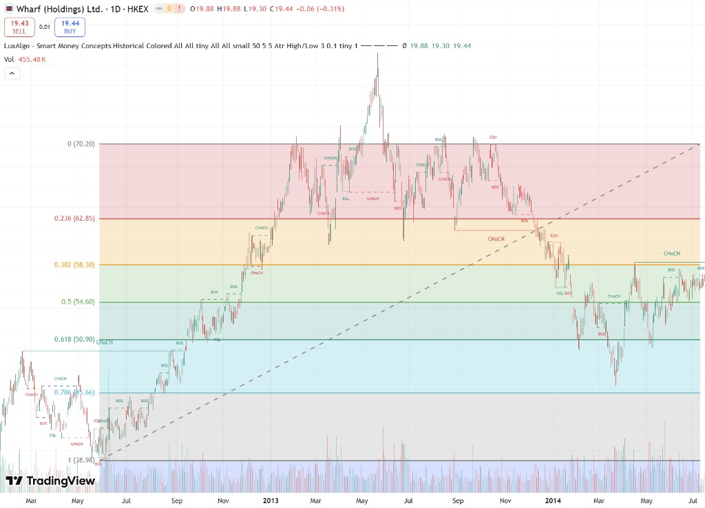
2013 年於 70.20 水平形成三重頂，連續三次 EQH 觸碰同一高位，阻力確認後 CHoCH 反轉下跌。
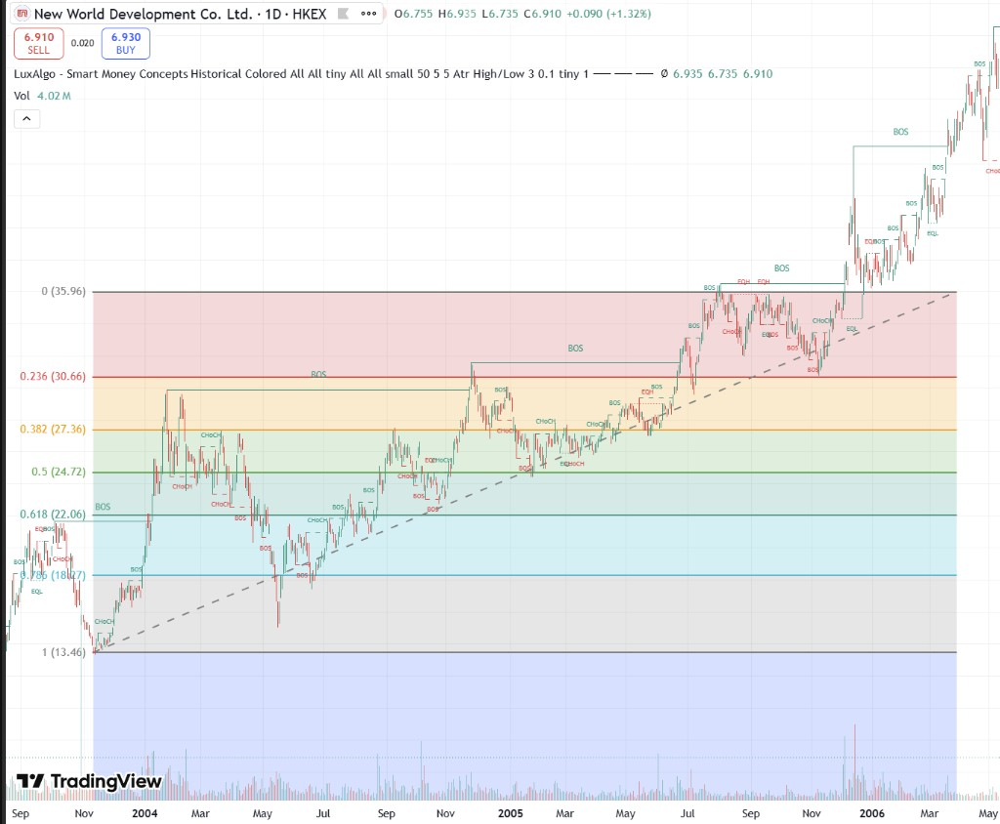
2005 年 7–11 月於 35.96 高位多次 EQH 觸碰，蓄勢後 BOS 突破，展開凌厲升浪。
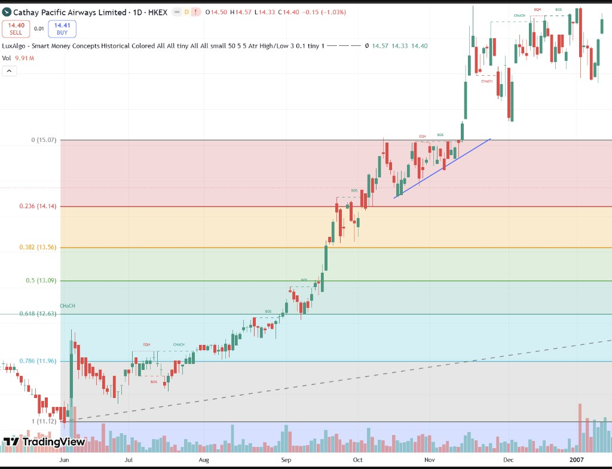
2006 年 10–11 月於 15.07 水平重覆觸碰 EQH，形成上升三角形，突破後急升逾 20%。
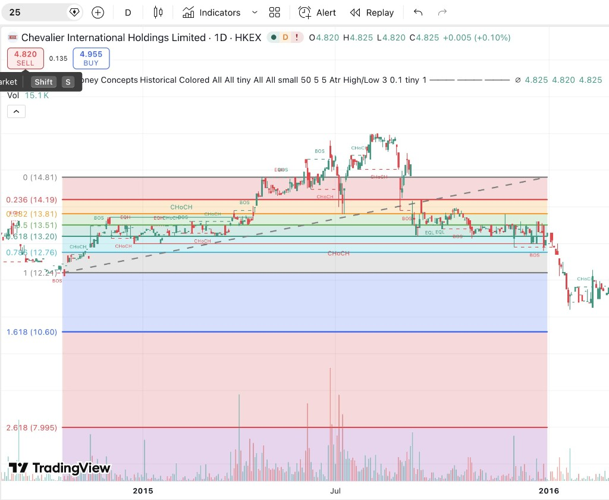
2015 年於 14.81 高位區間多次 EQH 測試，反覆觸碰後 BOS 假突破，最終 CHoCH 反轉。
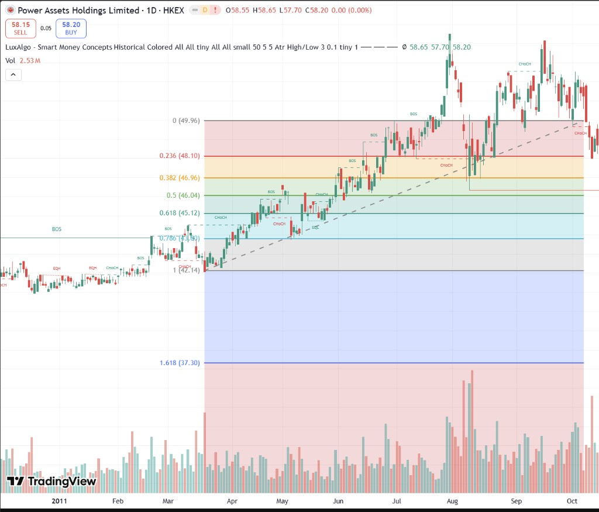
2011 年先於 40 水平 EQH 盤整，突破後於 58.65 重覆觸碰新高，確認強勢阻力後再突破。
並非每次觸碰高位都會成功突破。以下 5 個案例展示假突破、高位受阻、趨勢線失守等常見失敗模式—— 學會辨識失敗信號，與成功突破同樣重要。
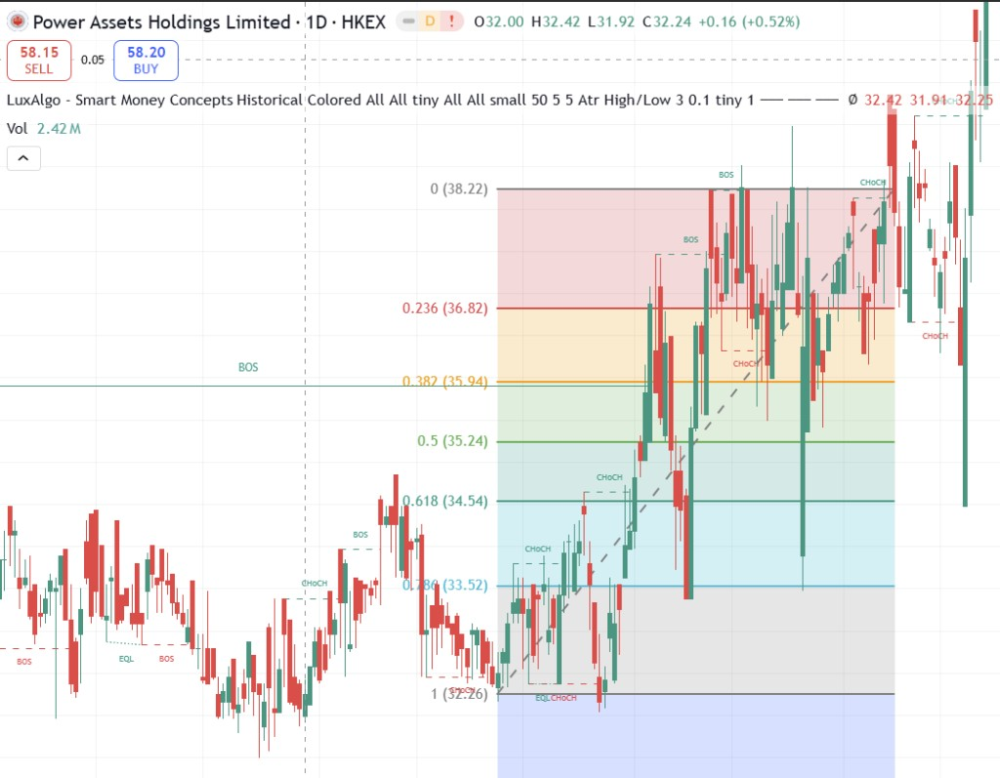
衝破 38.22 高位後出現長上影，翌日大陰線吞沒整段升幅，典型多頭陷阱（Bull Trap）。
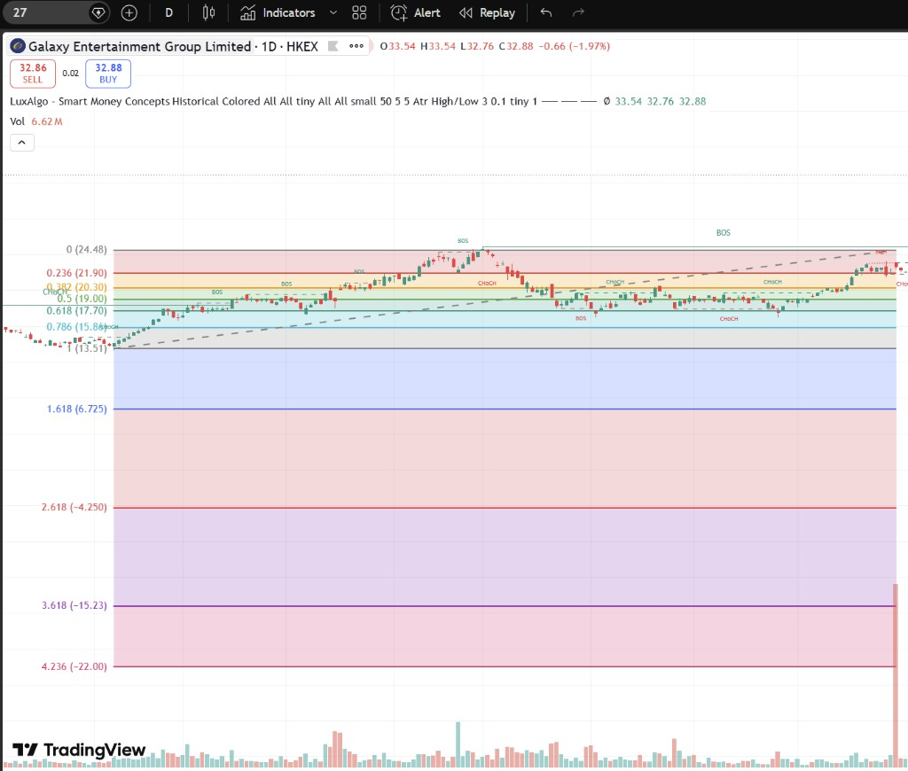
升破 24.48 後急漲至 33.54，但放量大陰線從新高回落，突破動能未能延續。
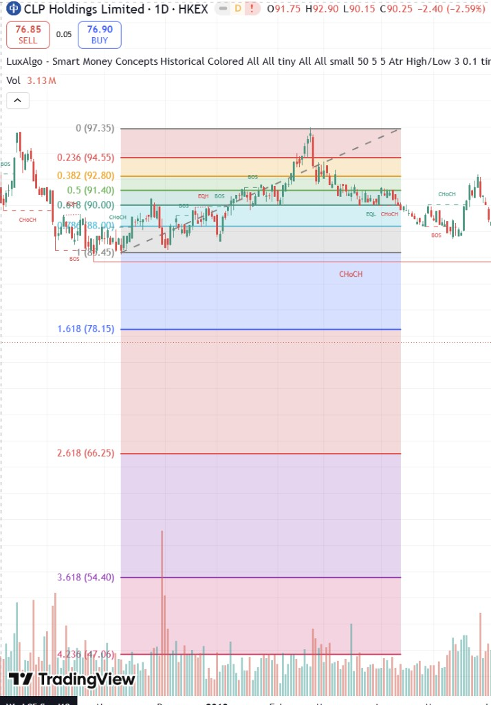
觸及 97.35 歷史高位後未能站穩 0.236，連續跌破 0.382、0.618、0.786，CHoCH 確認熊市結構。
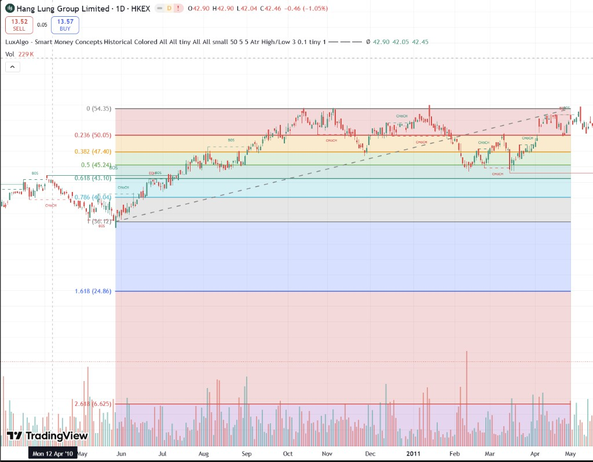
2010–2011 年於 54.35 三次觸頂失敗，跌破上升趨勢線及 0.618（43.10），多重頂確認反轉。
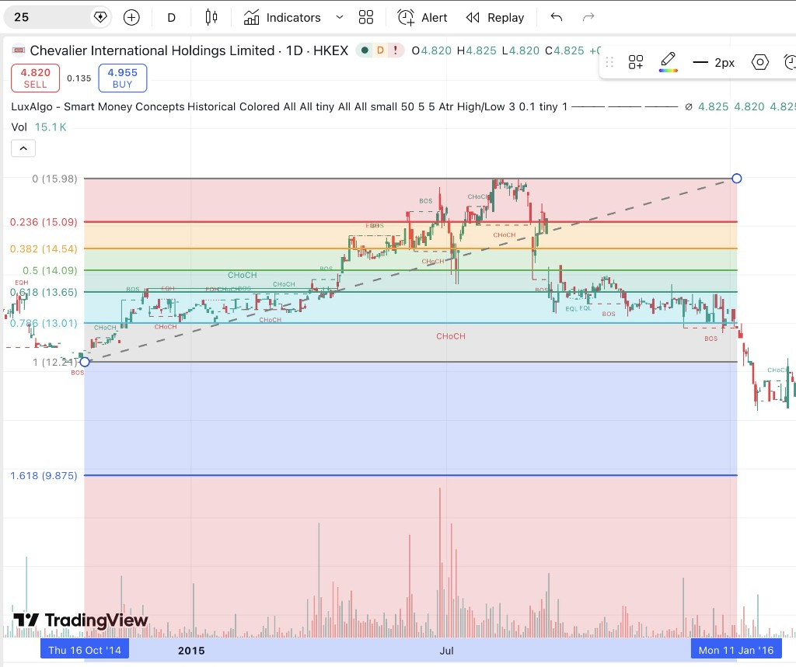
2015 年見頂 15.98 後跌破趨勢線及 0.786，2016 年初崩穿 12.21 起漲點，結構完全瓦解。
突破必須以收盤價確認，並搭配成交量放大，避免假突破陷阱。
止損設在整個 build up 的最低位下方，而非固定百分比。
第一目標（TP1）設在 build up（波幅收窄）的 1.5 倍，第二目標（TP2）設在整段上升趨勢的 61.8%，分批獲利了結。
只在 BOS 方向交易，CHoCH 出現時減倉或觀望，不逆勢抄底摸頂。
突破後等待回撤至 0.382–0.618 斐波區間再進場，風險報酬比更優。
單筆風險不超過帳戶 1–2%，連續虧損後暫停交易，嚴守紀律。
價格需重覆觸碰歷史高位，多次測試確認阻力轉支撐，突破才更具可靠性。
將上述突破四大條件（歷史高位、重覆觸碰、收窄、成交萎縮）編碼成自動化掃描器，一鍵找出港美股中正在「準備突破」的候選股。
貼近真實歷史高位（非 52 週高位）、重覆觸碰阻力區（2+ 次）、低點逐步上移、波幅收窄（comp < 0.85）、成交收縮（vol < 0.9）。六項條件計分，≥4 分列為候選。
TradingView scanner API 先篩選貼近 52 週高位的大市值股票，再以 yfinance 全歷史日線（period='max'）計算真實 ATH 距離與壓縮分數，避免 90 日高位誤判。
已封裝為 breakout-compression-scan skill，含完整掃描程式 scan_compression.py，支援港（hk）美（us）兩個市場，自動排除 OTC 外國上市名單。
# 安裝依賴
pip install yfinance requests numpy
# 掃描美股（NASDAQ / NYSE，排除 OTC）
python3 ~/.hermes/skills/trading/breakout-compression-scan/scripts/scan_compression.py us
# 掃描港股
python3 ~/.hermes/skills/trading/breakout-compression-scan/scripts/scan_compression.py hk~/.hermes/skills/trading/breakout-compression-scan/（
對應本頁四大條件）
⚠️ 掃描結果屬技術篩選，並非買入訊號。突破需以放量 + 收盤價站穩 ATH 確認；港美股數據以交易日收市為準，開市前請重新確認。